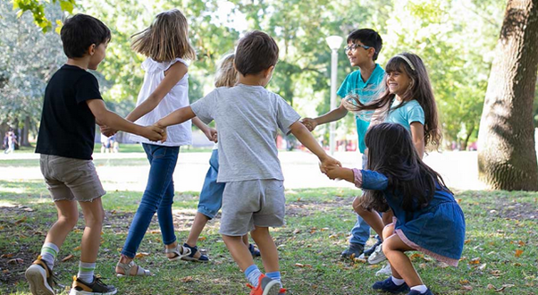

Welcome to this digital portfolio, a professional resource designed for early childhood educators, service providers, and community professionals. This portal is dedicated to exploring the diverse, complex, and evolving contexts in which children grow and develop. By understanding the social, economic, cultural, health, and crisis-related factors that shape family and community life, educators can implement informed, evidence-based strategies to support children’s wellbeing, learning, and resilience.
The portal is organised into five main contexts: Economic, Social, Cultural & Diversity, Health & Wellbeing, and Crisis & Emergency. Each context is presented with comprehensive insights into its nature, relevance in early childhood education, associated sociological theories, and contemporary research. You will also find detailed analyses of the impact of each context on children and families, relevant Australian social policies, and practical strategies that educators can employ to foster positive outcomes.
This portfolio further provides guidance on professional and community partnerships, connecting educators with organisations and specialists who support children and families across various circumstances. Additionally, curated resources, including programs, storybooks, videos, and podcasts, are included to enhance teaching practice, build empathy, and promote resilience in children from birth to five years.
Through this resource, educators are encouraged to adopt a reflective, inclusive, and collaborative approach in their practice, ensuring that all children, regardless of their family or community context, are supported to thrive.
Explore the sections in our website pages to access practical guidance, research-based strategies, and professional insights that enhance early childhood service delivery.